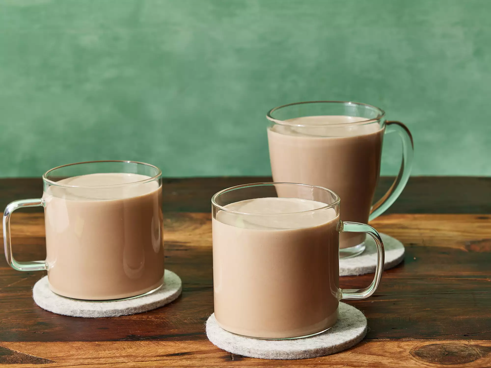

Irish Cream

Description
Irish cream is a rich liqueur made with Irish whiskey and cream. It can be served straight, on the rocks, or mixed into cocktails.
You can also use it as an ingredient in boozy, decadent desserts.
Ingredients
- 1 (14 ounce) can sweetened condensed milk
- 1 ⅔ cups Irish whiske
- 1 cup heavy cream
- 2 tablespoons chocolate syrup
- 1 teaspoon instant coffee granules
- 1 teaspoon vanilla extract
- 1 teaspoon almond extract
Instructions
- Combine sweetened condensed milk, Irish whiskey, heavy cream, chocolate syrup,
coffee granules, vanilla, and almond extract in a blender. Blend on high speed until
incorporated, 20 to 30 seconds.
- Store in a tightly sealed container in the refrigerator. Shake well before serving.